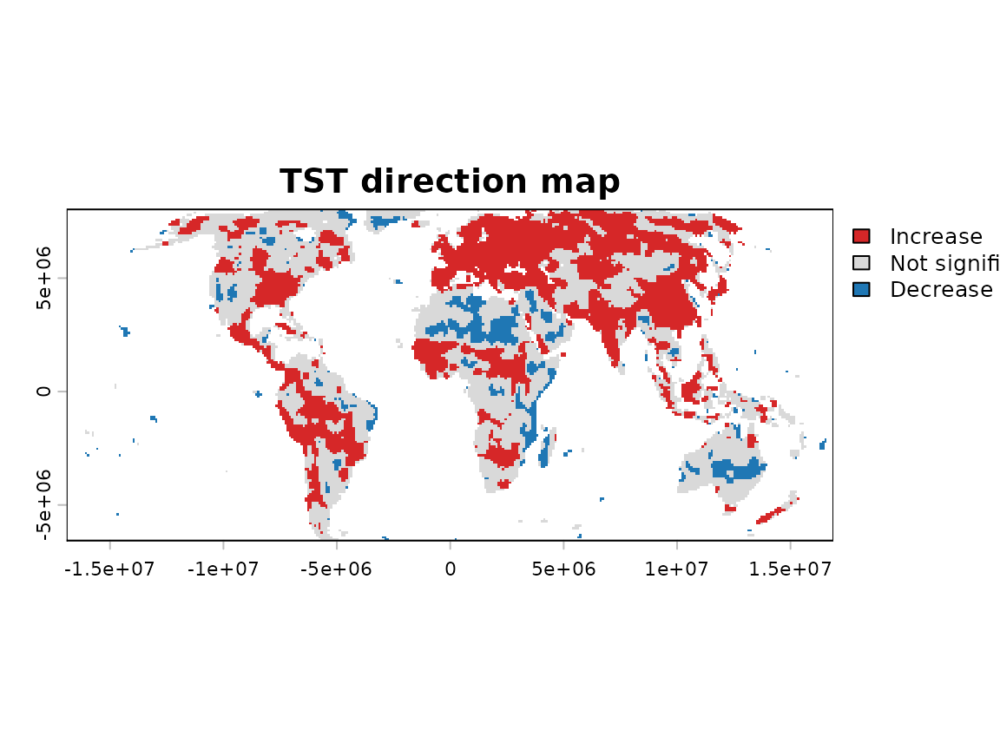

5. Trend workflows and published methods
Source:vignettes/g-workflow-trends.Rmd
g-workflow-trends.RmdWhy this matters
A complete trend analysis is not one problem but several: serial correlation within each cell’s own series, spatial dependence among neighbouring cells, and the multiplicity created by testing many cells at once.
A workflow’s own structure mirrors this: one stage per challenge – prewhitening, trend testing, slope estimation, multiple-testing correction – run in a fixed order that keeps track of itself, rather than left to be reassembled by hand each time and risking a lost intermediate result along the way.
That structure follows True Significant Trends (TST), introduced by Gutiérrez-Hernández and García (2025) as the methodological origin of sptrends: a published workflow that runs those four stages in that exact sequence, each addressing one of the challenges above.
What workflow_trends() does
workflow_trends() coordinates the selected stages and
returns one sptrends object compatible with
print(), summary() and plot().
Unlike TST itself, it is fully configurable: any stage can be swapped
for an alternative method or omitted, to match the analysis the user
actually needs – so not every configuration it can build should be
called TST.
Basic workflow
result <- workflow_tst(r, report = FALSE, verbose = FALSE)
result
#> <True Significant Trends (TST) result>
#> Prewhitening: 5987 of 15675 cells modified (38.2%)
#> Trend test: 15675 cells (Sm statistic)
#> Theil-Sen slope: median 0.0002692 (range -0.01121 to 0.009657)
#> Significant after FDR-BKY: 7881 (50.3%)
#> Use summary() for details, plot() for a map.
summary(result)
#> === FDR correction (the actual TST result) ===
#> Valid cells (m): 15675 | target q: 0.05
#> BKY -- pi0_hat: 0.574992 | m0_hat: 9013.0 | r1 (stage 1): 6662
#>
#> === Theil-Sen slope ===
#> Min. 1st Qu. Median Mean 3rd Qu. Max. NAs
#> -0.0112134 -0.0001525 0.0002692 0.0003020 0.0007519 0.0096566 33673
#>
#> === Trend test, uncorrected (diagnostic only -- not the TST result; see FDR correction above) ===
#> alpha n_significant n_not_significant pct_significant n_valid
#> 1 0.05 8091 7584 51.62 15675workflow_tst()’s own published defaults are exactly the
same four stages introduced in the preceding vignettes: selective
trend-preserving prewhitening, Contextual Mann-Kendall inference,
Theil-Sen trend-magnitude estimation and adaptive FDR-BKY correction –
this is the True
Significant Trends framework, the methodological origin of
sptrends, reproduced with no arguments other than the input
raster itself.
plot(result)
Understanding the results
Beyond a single plot – a TST direction map by default, though
plot() accepts other representations – the object behind it
keeps everything that produced and explains that result: the output and
elapsed time of each stage, and the intermediate trend, slope and FDR
results, all directly accessible. Trend direction is derived from the
sign of the CMK statistic, while FDR-BKY determines which cells remain
statistically significant; grey cells are the ones that did not survive
multiple-testing correction.
None of this replaces expert judgement. The statistics describe what the data show under the chosen methods; whether that description is meaningful for the question at hand, and what it implies in context, is for the expert who configured the workflow to decide – not something the workflow itself can determine.
Choosing the main options
| Stage | Main choices |
|---|---|
| Prewhitening |
TFPW_WS, TFPW_Y, TFPW_Z,
VCTFPW, or none
|
| Trend test |
CMK, MK, MMK, or
OLS
|
| Slope |
TS, OLS, or RM
|
| Multiple testing |
BH, BKY, or BY
|
Stage-specific arguments are supplied through
prewhiten_args, trend_args,
slope_args and fdr_args.
Published workflows
workflow_tst() and workflow_rta() run an
entire published analysis in one line of code, each reproducing one
specific, citable method exactly – use them, rather than assembling the
same sequence by hand through workflow_trends(), whenever
the goal is to reproduce a published result:
| Workflow | Published sequence | Function |
|---|---|---|
| TST (Gutiérrez-Hernández & García, 2025) | Selective prewhitening, CMK, Theil-Sen, FDR-BKY | workflow_tst() |
| RTA (Gutiérrez-Hernández & García, 2024) | CMK, Theil-Sen, FDR-BH; no prewhitening | workflow_rta() |
tst <- workflow_tst(r, report = FALSE, verbose = FALSE)
rta <- workflow_rta(r, report = FALSE, verbose = FALSE)Both functions permit documented extensions, but changing their
published defaults produces a derived variant rather than an exact
reproduction. Use workflow_trends() when the scientific
question requires a genuinely custom combination.
Common mistakes
- Do not label every complete custom workflow as TST; only
workflow_tst()’s own published defaults reproduce that exact method (see Published workflows above). - Do not correct temporal autocorrelation twice by combining prewhitening and MMK without a specific rationale; both approaches address the same problem.
- Do not repeat workflow-managed arguments inside stage argument
lists;
prewhiten_args,trend_args,slope_argsandfdr_argsare for stage-specific options only, not for arguments the workflow itself already sets. - Do not omit a stage merely to reduce computation without a methodological reason; each stage exists to address one of the three challenges described above.
Next steps
Test several scientifically plausible configurations on the example series and compare their intermediate diagnostics and final maps. This sensitivity analysis helps reveal how serial-correlation treatment, trend testing, slope estimation and multiple-testing correction influence the results and provides a better understanding of the data before analysing a new dataset.
Statistical output should not be accepted blindly. Examine the underlying time series, spatial patterns, diagnostics and methodological assumptions, and interpret the results in relation to the environmental process being studied. Alternative configurations should be justified scientifically, not selected because they produce more significant trends.
Further details
See ?workflow_trends for configuration rules and
?workflow_tst and ?workflow_rta for the
complete published methods, assumptions, limitations, quality assurance
and references.
References
- Gutiérrez-Hernández, O. and García, L.V. (2024) Robust Trend Analysis in Environmental Remote Sensing. Remote Sensing, 16(20), 3886. https://doi.org/10.3390/rs16203886
- Gutiérrez-Hernández, O. and García, L.V. (2025) Uncovering True Significant Trends in Global Greening. Remote Sensing Applications, 101377. https://doi.org/10.1016/j.rsase.2024.101377